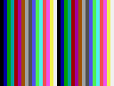
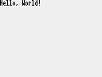

Andrew Kersten
Skills
I am experienced with both C and Java as well as being comfortable writing C#, GLSL, C++, and SQL. I have also experimented with Python, Javascript, x86 Assembly, and Dart. I have created applications for Windows, Linux, and Android devices. Additionally I have used AWS and Google Compute Engine to launch a variety of Linux servers used for databases, web applications, and game servers.
Portfolio
-
Voxel Editor
The goal of Voxel Editor was to create an environment comfortable for an average gamer to design voxel models in. Voxel Editor features a first person camera and intuitive controls. The editor exports models in the .vox format making it compatible with other popular voxel editors. Additionally the editor can procedurally generate terrain using simplex noise.


-
Stardew Patcher
Stardew Patcher is a C# application that modifies the MSIL bytecode of Stardew Valley to fix several bugs with the 1.03 release.
- The public release accumulated over 10,000 downloads.
- The modified executable is created in memory without needing to overwrite any game files.
- The patch was released only two days after the game launched and several days before an official patch was available.
BitBucket Repository -
LibDCPU16
LibDCPU16 is a C library for emulating the DCPU-16 processor. The emulator is cycle accurate and compatible with the DCPU 1.7 Specification instruction set. The images below are simple sample programs that write to RAM that is mapped to the LEM1802 monitor.
  The snippet below shows the assembly for the "Hello, World!" sample above.
GitHub
Source code for all portfolio projects is available at https://github.com/andrewkersten.